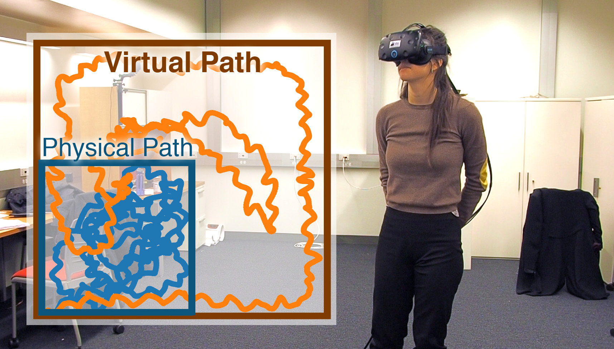

|
- DiffTaichi: Differentiable Programming for Physical Simulation
- Yuanming Hu, Luke Anderson, Tzu-Mao Li, Qi Sun, Nathan Carr, Jonathan Ragan-Kelley, Frédo Durand
- arXiv:1910.00935
-
Preprint
|
 |
- Reducing Simulator Sickness with Perceptual Camera Control
- Ping Hu, Qi Sun, Piotr Didyk, Li-Yi Wei, Arie Kaufman
- SIGGRAPH Asia 2019
|
 |
- Learning to Reconstruct 3D Manhattan Wireframes from a Single Image
- Yichao Zhou, Haozhi Qi, Simon Zhai, Qi Sun, Zhili Chen, Li-Yi Wei, Yi Ma
- ICCV 2019 (Oral Presentation)
-
Preprint
Video
|
|  |
- Towards Virtual Reality Infinite Walking: Dynamic Saccadic Redirection
- Qi Sun, Anjul Patney, Li-Yi Wei, Omer Shapira, Jingwan Lu, Paul Asente, Suwen Zhu, Morgan McGuire, David Luebke, Arie Kaufman
- SIGGRAPH 2018
-
Paper
Video
BBC Click
Two Minute Papers
GTC 2018 Demo
|
 |
- Perceptually-Guided Foveation for Light Field Displays
- Qi Sun, Fu-Chung Huang, Joohwan Kim, Li-Yi Wei, David Luebke, Arie Kaufman
- SIGGRAPH Asia 2017
-
Paper
Video
NVIDIA Page
|

|
- Mapping Virtual and Physical Reality
- Qi Sun, Li-Yi Wei, Arie Kaufman
- SIGGRAPH 2016
-
Paper
Video
Cardboard Clips
Sample Scene and Mapping Data
|

|
- Poster: Buyers Satisfaction in A Virtual Fitting Room Scenario Based on Realism of Avatar
- Qi Sun, Seyedkoosha Mirhosseini, Ievgeniia Gutenko, Ji Hwan Park, Charilaos Papadopoulos, Bireswar Laha, Arie Kaufman
- IEEE Symposium on 3D User Interfaces, 3DUI 2015
- Paper
|

|
- Benefits of 3D Immersion for Virtual Colonoscopy
- Koosha Mirhosseini, Qi Sun, Krishna Chaitanya Gurijala, Bireswar Laha, Arie Kaufman
- IEEE Visualization Workshop on 3DVis 2014
- Paper
|

|
- Data-Driven Human Motion Synthesis Based on Angular Momentum Analysis
- Ping Hu, Qi Sun, Xiangxu Meng, Jingliang Peng
- IEEE International Symposium on Circuits and Systems, IEEE-ISCAS 2013
- Paper
|

|
- Modeling 3D Faces from Samplings via Compressive Sensing
- Qi Sun, Yanlong Tang, Ping Hu
- International Conference on Digital Image Processing, ICDIP 2013
- Paper
|

|
- Kinect-Based Automatic 3D High-Resolution Face Modeling
- Qi Sun, Yanlong Tang, Ping Hu, Jingliang Peng
- International Conference on Image Analysis and Signal Processing, IEEE-IASP 2012
- Paper
|